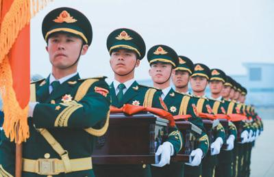
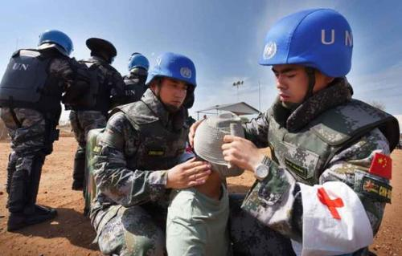

返回上一层
中国军人，祖国为你骄傲
- 今年是新中国成立70周年。70年来，我们的国家发生了前所未有的历史巨变，实现了从站起来、富起来到强起来的伟大飞跃；70年来，人民军队在战斗中成长，在继承中创新，在建设中发展，始终同国家和民族的命运紧紧连在一起；70年来，军人的激情为祖国燃烧，军人的热血为祖国而流，军人的忠诚祖国见证，军人的荣誉属于祖国。在军人心中，祖国的安宁是最大的幸福，人民的需要是最大的荣耀。可以说，军人肩膀上扛的不仅仅是枪炮，更是国家和民族的安危重任，军人肩头的负重多一份，国家安全的可靠性就增加一分。
- 
- 祖国因你们而骄傲 英烈功勋，英名不朽，“最可爱的人”永远留在人们的心中。 清明节前夕，在异国长眠六十余载的英雄忠骨终于回归故里——第五批在韩志愿军烈士遗骸回国。在两架战机的护送下，运载20具烈士遗骸棺椁的中国空军伊尔—76运输机抵达沈阳。次日，烈士遗骸棺椁安葬在了沈阳抗美援朝烈士陵园，从全国各地闻讯赶来的老兵和烈士后代，在陵园外早早守候，迎接英雄回家。2014年至2017年，已先后有569位从韩国迎接回来的志愿军烈士遗骸在这里安息。“祖国接你们回家！”“公辞六十载，今夕且当归。”“向英雄致敬！”……人们的留言表达了对志愿军烈士遗骸回归祖国怀抱的深情和敬意。 绢花洁白，苍松静立。此时，人们的心里仿佛激荡起那滚烫的文字：“他们的品质是那样的纯洁和高尚，他们的意志是那样的坚韧和刚强，他们的气质是那样的淳朴和谦逊，他们的胸怀是那样的美丽和宽广……” 岁月静好，是因为有人替你负重前行。在和平时期，保家卫国、边疆建设、抢险救灾、撤侨护航、执行国际维和任务，哪里有危难，哪里就有人民子弟兵的身影，哪里有需要，哪里就是人民军队奋战的疆场。我们能够沐浴在和平的阳光下，为美好生活努力奋斗，正是因为有中国军人用忠诚守卫筑牢坚固的国防堡垒，用奉献担当护佑和平与发展，用鲜血生命把黑暗阻挡在远方。中国军人的奉献义无反顾，牺牲感天动地，功勋永远铭刻在人民心中。今天，我们缅怀先烈、褒扬英雄，将英雄烈士们热爱祖国、忠于人民、无私奉献、敢于牺牲的精神弘扬下去。
- 
- 维和战场：书写中国军人的使命与担当 《战狼Ⅱ》《红海行动》等以救援海外同胞和难民为主题的电影，塑造出不畏战火救死扶伤、流血受伤却永不放弃的中国军人形象。在异国他乡，维和战场，中国军人用生命践行使命，用无私的奉献和果敢的行动，彰显了当代中国军人的血性传承。 “中国维和部队的几名同志壮烈牺牲，为世界和平献出了宝贵生命，我们怀念他们，要把他们的亲人照顾好。”2017年元旦前夕，习主席在发表新年贺词时，饱含深情地讲到了捐躯沙场的维和战士和他们的家人。当地时间2016年5月31日20时51分许，在马里执行第四批维和任务的申亮亮，为阻止携带炸弹的恐袭汽车强行闯卡壮烈牺牲。当地时间2016年7月10日，南苏丹首都，中国维和步兵营执勤分队遭袭。李磊、杨树朋不幸牺牲。2015年7月26日，武警山东总队临沂支队上士班长张楠在中国驻索马里使馆执行警卫任务，不幸在恐怖袭击中罹难。 维和是一项异常艰巨且危险的工作，维和官兵驻扎的地区安全形势严峻、自然环境恶劣、生活条件艰苦、保障任务繁重。中国军人不畏恶劣的自然环境，纪律严明、专业过硬，为祖国赢得了无数赞誉，用自己的奉献和牺牲为当地人民换来了渴望已久的和平与安宁。中国不仅是联合国安理会5个常任理事国中最大的出兵国，也是最主要的出资国之一。1990年4月，中国向联合国停战监督组织派遣了5名军事观察员，这是中国军人首次参加联合国维和行动。1992年4月，中国第一支参加联合国维和行动的“蓝盔部队”奔赴柬埔寨。在多年的实践当中，我国已经累计派出了3.6万人次的维和军事人员，中国军队为国际维和事业做出了巨大贡献。 “中国红和平蓝，责任使命一肩担，年轻的中国军人，青春在红海上扬帆……”纪录片《中国红·和平蓝》的主题曲，在铿锵有力的旋律中，道出了中国维和官兵献身强军事业的豪迈誓言。 抗灾抢险：映射全心全意为人民的永恒底色 在洪水高悬的大堤、在抗洪抢险的一线、在地形复杂的受灾山区，哪里有险情，哪里就有冲锋在前的青年军人，哪里有呼救，哪里就有高高飘扬的八一军旗。解放军和武警部队官兵或摩托化开进、或空中投送、或铁路急运，紧急奔赴灾区。和平时期的中国军人冲在前面，淋在雨中，泡在水里，吃在堤上，睡在地上，永远奔跑的身影、冲锋的姿态、坚毅的表情、忘我的投入，为“人民子弟兵”做了最生动的注解。 “每当危险来临，想象自己是手握宝剑的人！”这句刘景泰烈士生前写在笔记本上的话，让所有人为之动容，也是这名共和国军人爱党报国、爱民为民、直面生死、不怕牺牲的英雄气概的生动写照。2016年7月，台风“尼伯特”来袭，东部战区陆军某团战士刘景泰在抗击台风的战斗中不幸牺牲，他用舍己为民的壮举，把对人民群众的忠诚大爱，挥洒在八闽大地。 2017年7月，湖南、广西等地受强降雨持续影响，江河湖泊水位暴涨。在这场抗洪抢险的战斗中，两名参与抗洪的武警官兵的双脚感动了中国——他们的双脚在洪水中浸泡了一天一夜，脱皮、脚板腐白、褶皱纵横，甚至被石砾瓦片划出了道道伤痕……国防科技大学150多名大四学员组成的抗洪部队出色地完成了赴湖南益阳桃江抗洪抢险任务，而他们出发的当天学校正在举行毕业晚会，平均年龄只有22岁的军校学员把毕业典礼搬到了抗洪前线，把青春镌刻在了抗洪堤坝上。 在受灾地区的老百姓眼中，看到迷彩就燃起了心中的希望和生机。滚滚激流犹如试金石，映射出人民子弟兵不忘初心、全心全意为人民的永恒底色，也绵延了和平时期的军民鱼水情深。
- 演训沙场：献身强军兴军的伟大事业 “在200公里以上时速玩穿针引线的精细活”，“航母战斗机英雄试飞员”戴明盟一次次勇闯“鬼门关”。面对灾难性的潜艇“掉深”，海军372潜艇官兵舍生忘死成功排险，潜艇带伤完成任务……中国军人勇于奉献，倾力精武强能，勇敢攻坚克难，忠诚践行着强军目标。 海军某舰载航空兵部队一级飞行员、“逐梦海天的强军先锋”张超就是在实现中国梦强军梦征程上涌现的先进典型。航母是大国重器，承载着中华民族的百年梦想。作为航母战斗力的刀锋，海军某舰载航空兵部队自成立以来，面对舰载飞行的未知领域和巨大挑战，面对西方对我国技术上的封锁，这支部队边组建、边试验、边训练，闯出了一条具有中国特色的舰载飞行训练之路，自主培养出我国第一批航母舰载战斗机飞行员。 令人痛心的是，2016年4月27日，张超在驾驶歼—15进行陆基模拟着舰训练时，飞机突发电传故障，不幸壮烈牺牲，倒在了实现航母飞行梦想的最后一刻，献出了年仅29岁的生命。在这次飞行中，面对突发的飞机故障，张超的第一反应是挽救飞机。飞参数据显示，当时的情态下，张超的操纵近乎完美，壮举令人震撼。生死抉择的瞬间，足以见证，他是当之无愧的血性军人、彪炳史册的飞鲨勇士